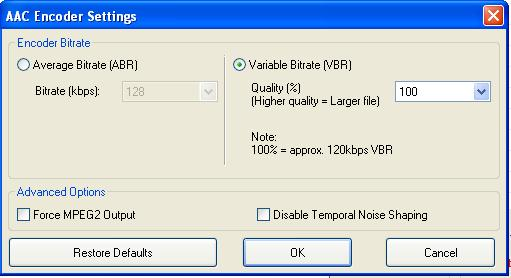

This is the encoder setting dialog for flac format.You have different format which you can convert.In order to change the setting of any available format you have to choose the required format from the combobox and change the settings as per the requirement.You also can change all settings to it's default value if you don't know any appropriate settings or if someone have changes your encoder settings.
Similarly,this dialog box is for setting the encoder options for mp3 format.You can change the channel,bitrate etc from by just selecting the combobox and your settings will be saved.
The dialog box above is for the aac encoder you can change your aac encoder settings from above dialog box.